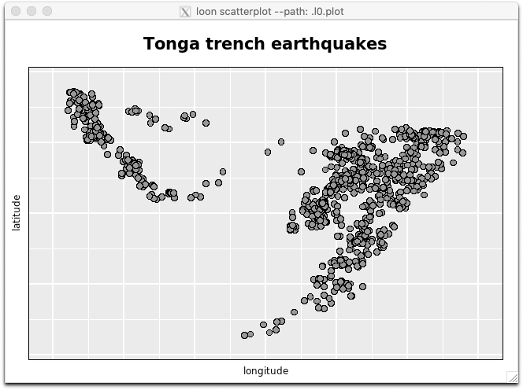
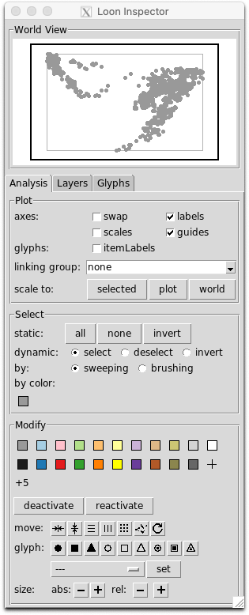
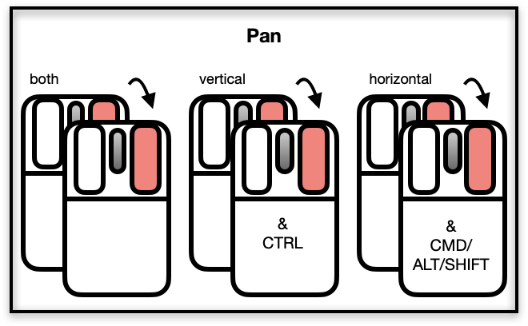
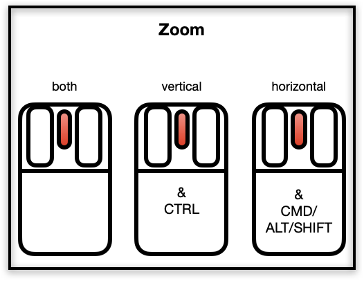
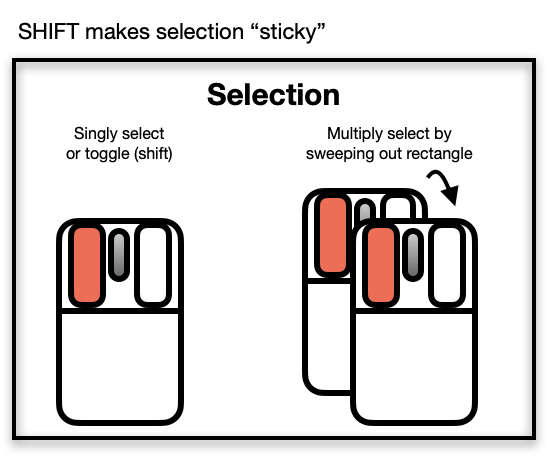
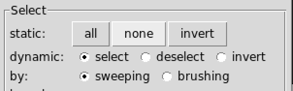
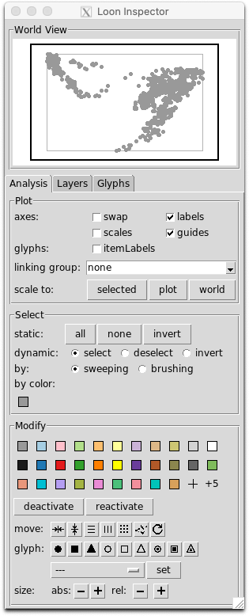
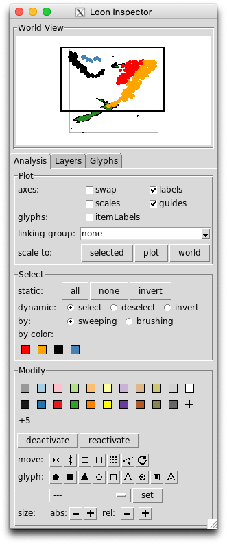
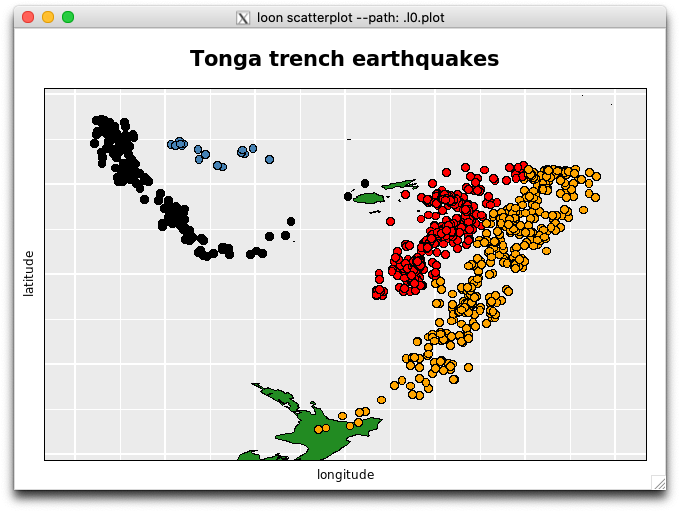

introduction.Rmdlibrary(loon)“Exposure, the effective laying open of the data to display the unanticipated, is to us a major portion of data analysis.” … John Tukey and Martin Wilk (1966)
Because loon is an interactive visualization system, this introduction is meant as a “hands on” tutorial. Not all interactions are from the command line (programmatic). Suggestions for interactions will also be given and questions that draw attention to the outcome of interactions.
After completing the tutorial, there are numerous other examples of using loon which can be explored. These include
R help(package = "loon") pages for loon, or alternatively online via as l_web()
demo(package = "loon"). These are especially useful because the source code for creating them appears in the console, andl_help() or R manual only as l_web().Here, we will walk through some of the basic functionality.
l_plot() the basic loon plotBegin with a simple scatterplot of the quakes data from R
## [1] ".l0.plot"
## attr(,"class")
## [1] "l_plot" "loon"This prints the above information on the loon plot (more on this later) and causes two windows to appear.
One is the scatterplot:

and the other a “loon inspector”:

For the moment we’ll focus mainly on the scatterplot.
The loon scatterplot is highly interactive and can be directly manipulated using the mouse. Several interactions are immediately available.
In what follows, images of a two button mouse (left is primary, right secondary) with a scroll wheel will be used to indicate the interaction. The colour red indicates selection, arrows and double images suggest movement, and any modifier keys are shown in the body of the mouse.
To pan the plot, select the plot interior with the right (or secondary) mouse button and move the mouse (with the button still down). The direction of panning can be constrained by holding down the named modifier keys while panning.

Try it. Select anywhere on the scatterplot and move it
Question: How did the inspector change in response to each movement?
Reproduce these movements on the smaller “World View” plot appearing at the top of the inspector.
How does the larger scatterplot change?
Another way to dynamically focus on different parts of the plot is by zooming, using scrolling:

To try it, note that there is a small cluster of 16 points towards the top left of the scatterplot.
On the scatterplot,
zoom in and out and move the plot around until only these 16 points appear in the scatterplot
use the restricted horizontal and vertical zooming so that the same 16 points occupy as much of the scatterplot’s space as possible
Question: How has the inspector changed in response?
On the inspector click on the button titled plot. What happened?
Using zooming and panning on the “World View”
There are two ways to directly select points on the scatterplot using the mouse: either by selection (one at a time or multiple selections) or by “sweep selection” as shown below:

To try this out, on the scatterplot (which should contain only 16 points)
Question: How has the inspector changed?
Now try a holding the left mouse button down and move the mouse.
This is called sweeping or sweep selection and allows us to sweep out a contiguous area of the plot.
Check: The 16 points should now be separated by colour into 4 groups and by glyph shape into 2 groups.
Question: How has the inspector changed?
You will have already discovered how to colour selected points from the inspector. You can now use the inspector to select points by colour:
By the above experimentation, you will have already discovered how the inspector is used to change the loon plot.
For example, try checking the “guides” box on the inspector to place a background grid of guide lines on the loon plot. Unchecking removes the guide lines.
The loon inspector consists of several component pieces.
At the top is the “World View” which shows a miniature version of the whole of the current plot, what is displayed there, and what is active.
Below the “World View” are a few tabs. The default (and most used) one is the “Analysis” tab where common interactions are separated into three regions: the “Plot”, the “Select”, and the “Modify” systems.
Try (in order) the following interactions between the inspector and the plot:
Check: You should have a scatterplot of open circles with three clusters of points in red, blue, and orange
You should have a scatterplot of open circles with three clusters of points in red, blue, and orange.
Use the functionality of the loon inspector to (in order)
You should now have four different coloured groups or clusters.
For fun, in the inspector
<Shift> keyQuestion: What is going on? When might this functionality be useful?
When done, turn the selection back to the defaults:

That is,
Shift selection works with any mix of
Exercise: Try out different combinations of the above selections.
For a variety of reasons, we sometimes want to (temporarily) move points in a scatterplot.
From the inspector:
move modifications on the configuration of the selected pointsFrom the scatterplot, selected points may be moved by hand
<Ctrl>-<Left-button>
<Shift><Ctrl><Left-button>
For example:

More colours can be added directly by clicking on the + or the +5 in the colour modification section of the inspector.
+5 twice adds 10 new coloursThe loon system default list of colours get be found programmatically:
## [1] "gray60" "#A6CEE3" "pink" "#B2DF8A" "#FDBF6F"
## [6] "#FFFF99" "#CAB2D6" "#DEB887" "#CDC673" "lightgrey"
## [11] "white" "gray10" "#1F78B4" "#E31A1C" "#33A02C"
## [16] "#FF7F00" "#FFFF00" "#6A3D9A" "#B15928" "#8B864E"
## [21] "gray40"Note:
R colourR has a similar set of base colours that is default for all its graphics devices:
palette()## [1] "black" "red" "green3" "blue" "cyan" "magenta" "yellow"
## [8] "gray"like the R palette, the loon inspector palette persists.
At the beginning of a loon session (that is, immediately after executing library(loon)) you might choose to change the default palette for the inspector to something that suits your tastes/problem.
Note: There may be unintended side effects to changing the inspector colours after a plot (and hence the inspector) has been created so this should be avoided.
A variety of functions exist to change an inspector’s palette of colours:
l_setColorList_baseR() # base R palette
l_setColorList_ColorBrewer("Set2") # colorblind friendly choice from ColorBrewer
l_setColorList_hcl(luminance = 80) # set of hcl colours
l_setColorList_ggplot2() # ggplot2's palette
l_setColorList_loon() # default loon palette
l_setColorList(l_colRemoveAlpha(rainbow(5))) # any set of colours without alphaTo change the palette
l_setColorList_loon() returns the inspector to the default loon colour palette.
The plot itself is a (tcl) data structure and can be assigned to an R variable.
Either at construction (the preferable way):
# loon graphics (note that the result is assigned to p)
p <- l_plot(x = quakes$long, y = quakes$lat,
xlabel = "longitude", ylabel = "latitude",
title = "Tonga trench earthquakes")or, if (as we did) you forgot to do that or reassigned something else to that variable (more likely), by accessing the plot from its tcl string:
# accessing the plot from its string representation
p <- l_create_handle(".l0.plot")Note that this string ".l0.plot" appears on the right side of the window title of an l_plot.
Do this and assign your plot to p. You might have to look at the window to get the string if you have created more than one l_plot().
Were we to now print p
p ## [1] ".l2.plot"
## attr(,"class")
## [1] "l_plot" "loon"we get the string name of the plot, but with a class attribute. This is the value of p and provides us access to a very rich data structure, but one whose values reside in tcl.
For example, we can access this value and, like plots from lattice or ggplot2 produce a grid data structure that can then be displayed as a grid graphic in R.
The simplest way to achieve this is to use the generic R function plot()
plot(p)Note that this will always reflect the current state of the loon plot. In this way, you can get snapshots of the loon plot after any interaction.
Exercise: Try this. Change p by direct manipulation in loon and repeat.
This allows the visual representation of a loon plot to be displayed at any time.
There are names associated with a loon plot indicating its contents or states:
names(p)## [1] "glyph" "itemLabel" "showItemLabels"
## [4] "linkingGroup" "linkingKey" "zoomX"
## [7] "zoomY" "panX" "panY"
## [10] "deltaX" "deltaY" "xlabel"
## [13] "ylabel" "title" "showLabels"
## [16] "showScales" "swapAxes" "showGuides"
## [19] "background" "foreground" "guidesBackground"
## [22] "guidelines" "minimumMargins" "labelMargins"
## [25] "scalesMargins" "x" "y"
## [28] "xTemp" "yTemp" "color"
## [31] "selected" "active" "size"
## [34] "tag" "useLoonInspector" "selectBy"
## [37] "selectionLogic"These features of p can be directly accessed the [] function.
For example,
p["showGuides"]## [1] TRUEA more meaningful example might be identify groups with the colours of the points.
This could be done simply as follows
unique_cols <- unique(p['color'])
group1 <- p['color'] == unique_cols[1]
# Number in group 1 (e.g. as you might have -- here from saved colours)
sum(group1)## [1] 425# Data on first few quakes in group 1.
head(quakes[group1,])## lat long depth mag stations
## 1 -20.42 181.62 562 4.8 41
## 2 -20.62 181.03 650 4.2 15
## 4 -17.97 181.66 626 4.1 19
## 5 -20.42 181.96 649 4.0 11
## 10 -17.47 179.59 622 4.3 19
## 11 -21.44 180.69 583 4.4 13Alternatively, a function could be written to save the groups as a list of logical vectors (one for each group):
getGroups <- function(loonplot){
# make sure it is an "l_plot"
if (!is(loonplot, "l_plot")) stop("loonplot must be an l_plot")
# use color to identify groups
unique_cols <- unique(loonplot['color'])
lapply(unique_cols,
FUN = function(col){loonplot['color'] == col}
)
}
myGroups <- getGroups(p) # returns groups identified by unique colour in p
nGroups <- length(myGroups) # number of groups
group1 <- myGroups[[1]] # each group is an element of the list myGroupsSimilarly, other point symbol characteristics (e.g. size, glyph) might be used to define groups. This is particularly handy when these are first determined interactively.
In addition to accessing the state values of a loon plot using [], its values may also be set using []. For example, try these:
p["showGuides"] <- TRUE
p["size"] <- sample(1:30, size = length(p["x"]), replace = TRUE)
for (i in 1:length(myGroups)) {
p["selected"] <- myGroups[[i]]
Sys.sleep(1)
}
p["selected"] <- FALSE
# something a little more involved for up to 6 groups
myCols <- c("firebrick", "steelblue", "purple",
"orange", "grey10", "grey80")
for (i in 1:length(myGroups)) {
p["color"][myGroups[[i]]] <- myCols[i]
}
# something crazy
for (j in 1:10) {
p["xTemp"] <- p["x"] + runif(length(p["x"]), min = -0.5, max = 0.5)
Sys.sleep(0.1)
}
# putting locations and size back
p["xTemp"] <- p["x"]
p["size"] <- 4loon plots are actually a little richer still. The scatterplot is only one possible layer in a plot. It could have many more, each layer having different geometric objects.
For example, we can add a map to the current loon plot p.
First get the relevant map:
It is added as a “layer” to the loon plot
l_layer(p, NZFijiMap,
label = "New Zealand and Fiji",
color = "forestgreen",
index = "end")## loon layer "New Zealand and Fiji" of type polygons of plot .l2.plot
## [1] "layer0"Try this out.


As can be seen in the world view, much of the map is outside of the plot display (shown as the black-bordered rectangle in the world view).
Now play with the scaling buttons in the loon inspector.
l_plot() is like base graphics plot()
loon’s l_plot() syntax intentionally resembles that of plot() from the base graphics package:
# Base graphics
plot(x = quakes$long, y = quakes$lat,
xlab = "longitude", ylab = "latitude",
main = "Tonga trench earthquakes")
# loon graphics
l_plot(x = quakes$long, y = quakes$lat,
xlabel = "longitude", ylabel = "latitude",
title = "Tonga trench earthquakes")The arguments to l_plot() provide initial values to each named state. Note that the argument names in l_plot are slightly different.
In result, however, loon plots are quite different
l_plot() returns a data structure; plot() does not
loon plot is highly interactive
In loon, the function plot.loon() is a method of the base plot() generic function that turns the loon plot (as the first argument of plot.loon()) into a grid object and plots it on the current R graphics device.
l_hist() the loon histogramAs seen earlier, the quakes data has some other variates in addition to the latitude and longitude of the quakes.
Before starting, make sure that you have the four groups coloured in the loon plot p as described earlier. If you don’t, then colour them again now.
Let’s consider a histogram of the depth of each earthquake.
h <- l_hist(quakes$depth,
xlabel = "depth",
title = "Tonga trench earthquakes")Note that the inspector has changed. There is a different inspector for each type of base loon plot.
Exercise:
yshows: density
Now that we have both a scatterplot and a histogram, we can explore one of the most important features of an interactive data visualization system like loon.
linkingGroup
The principal feature of loon plots which effect the linking of displays is the setting of a common linkingGroup.
On the histogram inspector, where it says linking group, select the text “none” and replace it with “quakes”
On the scatterplot inspector, if you do the same you will now be prompted to either “push” or “pull”. Select “push”.
NOTE: Programmatically, we might have tried to set the linking group directly on the plot as
h["linkingGroup"] <- "quakes"
p["linkingGroup"] <- "quakes"but this would have resulted in an error. The problem is that the synchronization must be set at the same time to determine where the linked states are to be drawn from. To effect this, the loon command l_confiure() must be used whenever two or more states are to be set simultaneously. The correct programmatic setting of the “linkingGroup” is
l_configure(h, linkingGroup = "quakes", sync = "push")
l_configure(p, linkingGroup = "quakes", sync = "pull")This causes h to push its linked states to the “quakes” group and p to pull them from the “quakes” group. (In this example, “pull” could have been used in both cases and is generally recommended.)
brush the scatterplot and observe the effects in the histogram
could also set colours programmatically on the histogram. Here we colour the histogram bars so that those earthquakes that are deepest are darkest.
Arbitrarily many plots may be created and linked in loon.
Consider, for example, adding two more histograms to the same linkingGroup. Note that the linking is done at creation and that the synchronization is by default a “pull”.
h_mag <- l_hist(x = quakes$mag,
linkingGroup = "quakes",
showStackedColors = TRUE,
yshows = "density",
xlabel = "magnitude")
h_stations <- l_hist(x = quakes$stations,
linkingGroup = "quakes",
showStackedColors = TRUE,
yshows = "density",
xlabel = "Number of stations reporting")Brush to show the relationship between magnitude of the earthquake and the number of stations reporting.
Alternatively, we could look at a linked scatterplot of these two variates and explore their relationship conditional on depth
p_mag_stations <- l_plot(x = quakes$mag,
y = quakes$stations,
showGuides = TRUE,
glyph = "ccircle",
linkingGroup = "quakes",
xlabel = "Magnitude",
ylabel = "Number of stations reporting")Brushing any one of these plots will cause the other plots to highlight in response.
Note that selection effectively shows the relations in one plot conditional upon the values actively being selected (e.g. brushed) in another.
linkingKey
Observations in a loon plot are uniquely identified (for the purpose of linking) by their linkingKey. Pardon the pun but this is the key to linking in loon.
For the most part, the default linking is all that you ever need do.
Trouble may arise, however, if you want to link two different plots that were created with different data frames whose rows so not match row for row. For example, one data.frame might be a re-ordering of the rows of the other. Or, it might be a subset of the rows of the other.
In either case, to have linking work properly the linkingKey of the plots associated with the two data frames need to be managed.
For example,
new_order <- sample(1:nrow(quakes), nrow(quakes), replace = FALSE)
some_quakes <- sample(1:nrow(quakes), 100, replace = FALSE)
quakes_linkingKey <- p["linkingKey"]
p_new <- with(quakes[new_order, ], l_plot(long, lat, title = "quakes reordered",
linkingGroup = "quakes", linkingKey = quakes_linkingKey[new_order]))
p_subset <- with(quakes[some_quakes, ], l_plot(long, lat, title = "quakes reordered",
linkingGroup = "quakes", linkingKey = quakes_linkingKey[some_quakes]))The new plots p_new and p_subset will link correctly with all the rest.
Rather than the default values, the linkingKey can be any vector of unique strings used in any newly created plot as above. Of course, not using the default linking keys from loon may require a little more care in management from the user.
l_plot3D
Given that the quakes data has three spatial dimensions (long, lat, and depth), it would be natural to view this in a three dimensional scatterplot.
# First, scale the data
scaled_quakes <- l_scale3D(quakes)
p_mag_stations <- l_plot3D(x = scaled_quakes$long,
y = scaled_quakes$lat,
z = scaled_quakes$depth,
showGuides = TRUE,
linkingGroup = "quakes",
title = "Three dimensional plot of quakes")Select the plot, type r to turn on the rotation mode. Press the down arrow on the keyboard until the darkest points (deepest quakes) are at the bottom of the display. Press r again to turn off the rotation mode.
Selecting the plot, the key r toggles the rotation mode; arrow keys rotate the plot vertically and horizontally. In rotation mode the plot may also be rotated free hand using the mouse. When rotation mode is toggled off (with the key r), the plot can again be brushed et cetera as with any l_plot. See help("l_plot3D") for more details.
NOTE Many methods exist for visualizing higher dimensional data in loon. For e.g. see help("l_navgraph"), help("l_pairs"), or help("l_serialaxes"). See also the online manual l_web().
Miscellaneous other topics on and sources of working and programming with loon.
Being able to get and set the plot contents means that it is possible to capture different plot states as grobs. There are a variety of ways to see how you might put loon to use.
There are of course many smaller examples available through the loon’s R documentation available via
help(package = "loon")and more complex examples and more general discussion via loon’s online help
Other vignettes have been developed to cover a range of topics. These currently include:
An example exploratory analysis: “Visible minorities in Canadian cities” available via
vignette("minorities", package = "loon")This illustrates a variety of loon features including map layers, parallel coordinate axes, and radial axes glyphs in the context of an exploratory analysis of the distribution of visible minorities in 33 Canadian cities.
New interactive graphics in loon in a teaching example: “Smoothers and Bone Mineral Density” available via
vignette("teaching-example-smoothing", package = "loon")This illustrates how to create new interactions in loon through more general bindings. This is done by developing a teaching tool for explaining how smoothing works. The example data set is bone from the ElemStatLearn package.
Some suggestions on integrating loon plots into an Rmarkdown document: “Loon in RMarkdown” via
vignette("Rmarkdown", package = "loon")There are numerous demos in loon whose source code might be examined for more examples of using loon. To see them all
demo(package = "loon") # list all demosThe range is quite broad. For example,
### teaching demos
demo("l_regression", package = "loon") # lots using the Old Faithful geyser
demo("l_regression_influential", package = "loon") # move and recolor points to change the regression fit
### gapminder
demo("l_us_and_them", package = "loon") # basic demo
demo("l_us_and_them_slider", package = "loon") # year selected on a slider
demo("l_us_and_them_choropleth", package = "loon") # world map and linked with a scatterplot
### the spatial package sp
demo("l_polygons_sp", package = "loon") # layer polygons with class sp
### layering and custom layouts
demo("l_layers") # demonstrate layer types
demo("l_layout") # custom layout widgets
demo("l_widgets") # inspector and plot in one window
### novel brushing and linking
demo("l_knn") # brushing by k nearest points in some subspace
demo("l_us_and_them_choropleth") # many to one linking
### high dimensional data and dimensionality reduction
demo("l_ng_images_frey_LLE") # navigation graphs, image data, LLE
demo("l_ng_dimred") # comparing dimension reduction methodsThe code that appears in the console after the demo can be examined and reused to create your own loony loon code.
zenplots
This package is available on CRAN.
install.packages("zenplots")
vignette("intro", package = "zenplots")Provides a means for compact layout of alternating 1d (e.g. histograms) and 2d (e.g. scatterplots) plots. In will layout base graphics plots, grid graphics plots, and loon plots.
It is similar to pairs plots but allows many many more plots to be displayed. From the introductory vignette:
“A zenplot can show the same information as a pairs plot but with two important display differences.
First, the matrix organization of the pairs layout is replaced by the “zig-zag” layout of zenplot. Second, the number of plots produced is about half that of a pairs plot allowing each plot in a zenplot to be given more visual space."
loon extensions - loon.<specialty> packagesThere are/will be other packages available which build on loon. Those developed by us are typically prefixed with loon (e.g. loon.ggplot)
These will typically be on CRAN when ready, but development versions are accessible from our various github repositories. For example,
There you can see what is coming up.
Graphics in the grid package are built up from graphical objects or grobs.
In loon, the functions grid.loon() and loonGrob() construct grobs from loon plots which can then be used as any other grob in grid
For example, when transformed to grid, the loon plot p structure becomes a gTree in grid.
gp <- loonGrob(p)
gp## gTree[GRID.gTree.32]This simply produces the grid data structure corresponding to the current state of the loon plot p, as can be seen from listing its contents:
The grob gp could now be used with all the functionality of the grid package.
Note that all of the elements of a loon plot appear in the grob, either explicitly or, if they were not drawn in the loon plot, as an empty grob containing the relevant arguments to drawing them.
Another function in loon to help that is the grid.loon() function
library(grid)
grid.newpage()
grid.loon(p)will display p as a grid graphic … and all that entails.